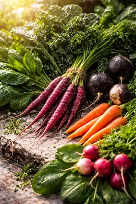
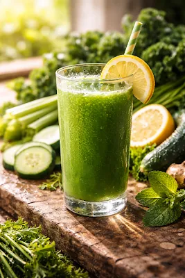

L’Élixir de Sang Vert : L'Alchimie de la Terre dans ton Assiette
Par Chest0 · 12 mars 2026
Introduction
Nous avons tendance à considérer les légumes comme une simple catégorie de la pyramide alimentaire, une obligation de santé ou un quota de fibres. Pourtant, chaque légume est un condensé de l'intelligence de la terre, une antenne qui a capté la lumière du soleil (photons) et les minéraux du sol pour les rendre bio-disponibles pour notre corps. Manger des légumes, c'est littéralement pratiquer une transfusion de vie. C'est intégrer dans nos cellules la structure et la résistance du monde végétal.
Problème
Le drame de l'alimentation moderne est la famine cellulaire au milieu de l'abondance calorique.
Calories vides : Nous mangeons beaucoup, mais nos cellules meurent de faim (manque de micronutriments).
Acidose tissulaire : Une alimentation trop riche en produits transformés et protéines animales acidifie le terrain.
Inflammation silencieuse : Le manque d'antioxydants végétaux laisse le champ libre aux radicaux libres qui endommagent notre ADN.
Le "Cerveau de brouillard" : Un intestin appauvri en fibres ne peut plus produire les neurotransmetteurs de la sérénité.
Promesse
En replaçant les légumes au centre de ton autel (ta table), tu ne fais pas qu'un régime, tu opères une reprogrammation métabolique.
Cet article va t'apprendre comment transformer les légumes en un véritable remède pour :
Remodeler ta silhouette par l'équilibre acido-basique.
Bénéfice
L'apport massif et varié de végétaux apporte des changements visibles et profonds :
Un teint éclatant : Les bétacarotènes et la chlorophylle purifient la peau de l'intérieur.
Une énergie constante : Fini les pics de glycémie et les coups de barre après les repas.
Une digestion silencieuse : Un ventre plat et un transit régulé grâce aux fibres douces.
Une immunité d'acier : Les phytonutriments renforcent les barrières naturelles du corps.

Pourquoi ce remède est efficace
Les légumes ne sont pas seulement des vitamines dans une enveloppe de cellulose. Ce sont des complexes enzymatiques vivants.
La Chlorophylle : Sa structure moléculaire est quasi identique à celle de l'hémoglobine humaine (le fer remplaçant le magnésium). Elle oxygène le sang.
Les Fibres Prébiotiques : Elles sont le "carburant" de tes bonnes bactéries. Sans légumes, ton microbiote s'atrophie.
L'Eau Morphogénique : L'eau contenue dans un légume cru est structurée par la plante. Elle hydrate bien mieux que l'eau du robinet car elle est chargée d'électrolytes naturels.
Les bienfaits
Voici la magie des couleurs dans ton corps :
Le Vert (Chlorophylle/Magnésium) : Détoxication des métaux lourds et apaisement nerveux.
L'Orange/Rouge (Lycopène/Caroténoïdes) : Protection oculaire et régénération cellulaire.
Le Violet (Anthocyanes) : Protection des vaisseaux sanguins et santé cognitive.
Le Blanc (Soufre/Allicine) : Anti-infectieux et soutien du foie (ail, oignon, choux).
La recette : L'Élixir "Jardin de Vie" (Jus à l'extracteur)
Pour une alchimie optimum, nous allons utiliser l'extraction à froid qui permet de séparer les fibres (parfois irritantes en grande quantité) des précieux nutriments.
Ingrédients :
3 branches de Céleri branche : Le roi de l'hydratation et du sodium organique.
1 poignée de feuilles d'Épinards frais : Pour le fer et la chlorophylle.
1 Concombre : Pour l'eau structurée et la silice (peau/ongles).
1 Pomme verte (bio) : Pour l'acide malique qui aide à dissoudre les toxines.
2 cm de Gingembre frais : Pour le feu digestif et l'anti-inflammation.
Le jus d'un demi-Citron : Pour fixer le fer et alcaliniser.
Protocole de préparation :
Le Nettoyage : Lave tes légumes à l'eau vinaigrée pour éliminer les résidus.
L'Extraction : Passe tous les ingrédients dans un extracteur de jus à rotation lente.
L'Activation : Ajoute une goutte d'huile d'olive ou de chanvre dans ton verre (certaines vitamines comme la A, D, E, K ont besoin de gras pour être absorbées).
La Dégustation : Bois-le immédiatement pour éviter l'oxydation des enzymes.

Comment l’utiliser
Cet élixir se boit idéalement le matin à jeun, 15 à 20 minutes avant ton petit-déjeuner.
La mastication : Même si c'est un liquide, "mâche" ton jus en bouche pour mélanger la salive (ptialine) et faciliter la digestion.
Variété : Change de légumes chaque semaine. Le corps déteste la monotonie et adore la diversité des molécules.
À qui s’adresse ce rituel
Aux "acidifiés" : Ceux qui ont des douleurs articulaires ou des brûlures d'estomac.
Aux fumeurs et citadins : Pour neutraliser les polluants environnementaux.
Aux sportifs : Pour tamponner l'acide lactique après l'effort.
À ceux qui manquent de vitalité : Pour un "shot" d'énergie biodisponible sans fatiguer le système digestif.
Précautions
Le cru VS le cuit : Si tu as les intestins très irrités (colon irritable), commence par des jus de légumes sans fibres, puis introduis les légumes cuits à la vapeur douce avant de passer au cru.
L'origine : Le bio n'est pas une option ici. Les légumes conventionnels concentrent les pesticides dans leur eau de structure.
Les oxalates : Pour les personnes sujettes aux calculs, ne pas abuser des épinards ou des blettes crus tous les jours.
Conclusion & appel à l’action
L’élixir aux légumes n’est pas une solution miracle immédiate.
C’est un rituel de reconnexion, une manière d’envoyer un message clair à ton corps : je te soutiens, je t’écoute, je te respecte.
👉 Pour rappel, si la nature ne l’a pas créé, ne le buvez pas. Un "jus" en brique pasteurisé n'est plus un légume, c'est de l'eau sucrée morte.
Si tu souhaites aller plus loin dans cette approche naturelle du bien-être, je partage régulièrement :
des élixirs ciblés,
des rituels santé simples,
des guides pratiques pour renforcer le corps et apaiser le mental.
📚 Je suis auteur bien-être sous le pseudo Chest0 JM.S, et mes ouvrages sont disponibles sur Amazon.